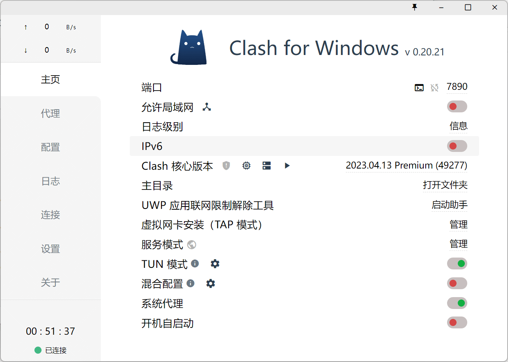
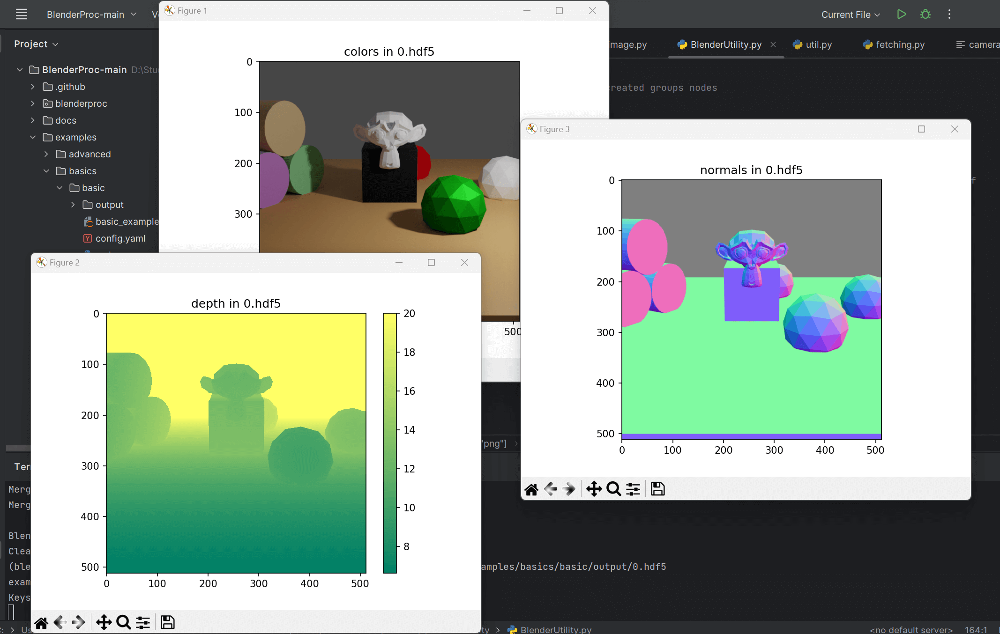
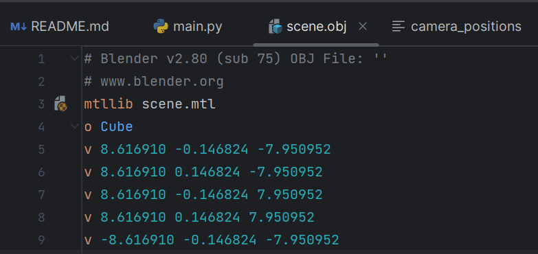
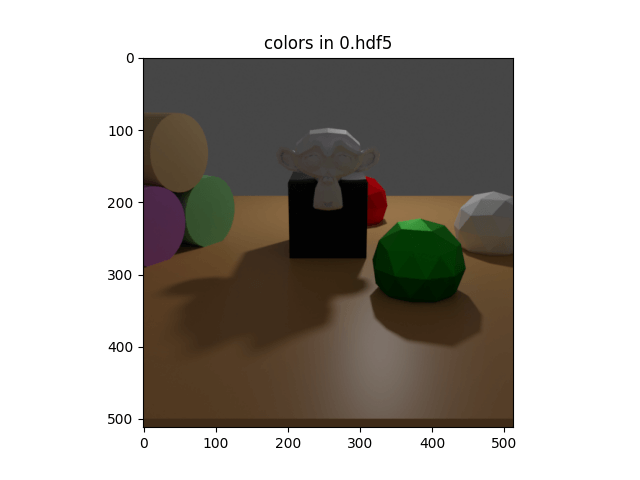
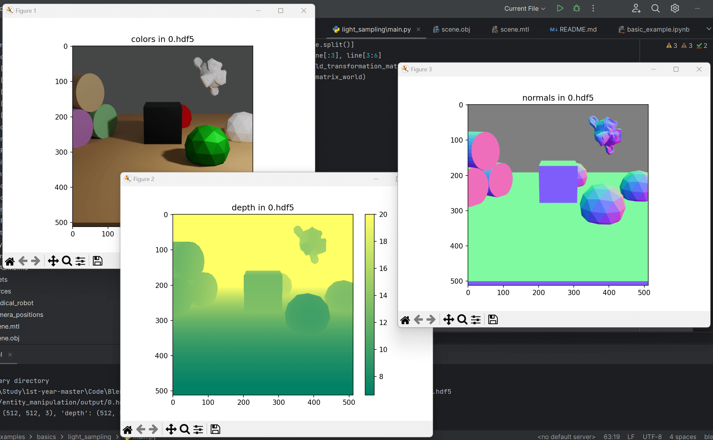

资源
仓库地址：DLR-RM/BlenderProc: A procedural Blender pipeline for photorealistic training image generation (github.com)，下载到本地，用 python 打开，解释器使用之前创建的 blender 环境。
正文
Basic example
Usage
示例代码在 examples/basics/basic/main.py 中。shell 中输入：
blenderproc run examples/basics/basic/main.py examples/resources/camera_positions examples/resources/scene.obj examples/basics/basic/output即可开跑！我说婷婷，会报错：
It seems the freeimage library which is necessary to read .exr files cannot be found on your computer.
Gonna try to download it automatically.
Imageio: 'freeimage-3.15.1-win64.dll' was not found on your computer; downloading it now.
Error while fetching file: <urlopen error timed out>.
Error while fetching file: The read operation timed out.
Error while fetching file: <urlopen error timed out>.
Error while fetching file: <urlopen error timed out>.我设了个全局代理和 TUN 模式再多跑几次就可以了 orz
{kind=link}

这么看从网上下载 freeimage-3.15.1-win64.dll，然后放到 C:\Users\XXXX\AppData\Local\imageio\freeimage\ 下也是可以的！
File saved as C:\Users\XXXX\AppData\Local\imageio\freeimage\freeimage-3.15.1-win64.dll.Warning: Changed install path from /home_local\XXX... to C:\Users\XXX..., there is no /home_local/ on this machine.
Using blender in C:\Users\XXX\blender\blender-3.3.0-windows-x64
Using temporary directory: C:\Users\XXX\AppData\Local\Temp\blender_proc_b830ed3583e7442cbe7cde6a0b37bd2b
Blender 3.3.0 (hash 0759f671ce1f built 2022-09-07 00:44:18)
Selecting render devices...
Device NVIDIA GeForce RTX 4060Laptop GPU of type OPTIX found and used.
Device 13th Gen Intel Core i9-13900HX of type CPU found and used.
Timer 'OBJ_import' took 1.5ms
Fra:0 Mem:10.46M (Peak 10.69M) | Time:00:00.16 | Mem:0.00M, Peak:0.00M | Scene, ViewLayer | Synchronizing object | Cube
Fra:0 Mem:10.47M (Peak 10.69M) | Time:00:00.17 | Mem:0.00M, Peak:0.00M | Scene, ViewLayer | Synchronizing object | Suzanne
...
Fra:0 Mem:85.58M (Peak 85.58M) | Time:00:01.04 | Compositing | Tile 4-4
Fra:0 Mem:85.52M (Peak 85.58M) | Time:00:01.04 | Compositing | De-initializing execution
Saved: C:\Users\XXX\AppData\Local\Temp\blender_proc_b830ed3583e7442cbe7cde6a0b37bd2b\normals_0000.exr
Saved: C:\Users\XXX\AppData\Local\Temp\blender_proc_b830ed3583e7442cbe7cde6a0b37bd2b\depth_0000.exr
Saved: 'C:\Users\XXX\AppData\Local\Temp\blender_proc_b830ed3583e7442cbe7cde6a0b37bd2b\rgb_0000.png'
Time: 00:01.36 (Saving: 00:00.30)
Fra:1 Mem:31.51M (Peak 85.58M) | Time:00:00.00 | Mem:0.46M, Peak:0.46M | Scene, ViewLayer | Initializing
Fra:1 Mem:31.51M (Peak 85.58M) | Time:00:00.00 | Mem:0.46M, Peak:0.46M | Scene, ViewLayer | Waiting for render to start
...
Fra:1 Mem:85.58M (Peak 85.58M) | Time:00:00.83 | Compositing | Tile 4-4
Fra:1 Mem:85.52M (Peak 85.58M) | Time:00:00.83 | Compositing | De-initializing execution
Saved: C:\Users\XXX\AppData\Local\Temp\blender_proc_b830ed3583e7442cbe7cde6a0b37bd2b\normals_0001.exr
Saved: C:\Users\XXX\AppData\Local\Temp\blender_proc_b830ed3583e7442cbe7cde6a0b37bd2b\depth_0001.exr
Saved: 'C:\Users\XXX\AppData\Local\Temp\blender_proc_b830ed3583e7442cbe7cde6a0b37bd2b\rgb_0001.png'
Time: 00:00.86 (Saving: 00:00.01)
Merging data for frame 0 into examples/basics/basic/output\0.hdf5
Merging data for frame 1 into examples/basics/basic/output\1.hdf5
Blender quit
Cleaning temporary directoryVisualization
blenderproc vis hdf5 examples/basics/basic/output/0.hdf5渲染了 colors、depth、normals 三张图片：
{kind=link}

Code
接受三个 parser 参数：
examples/resources/camera_positions：相机参数文本文件。

第一行数据表示相机位于 (0, -13.741, 4.1242) 的位置，其绕 x 轴旋转角度为 1.3，绕 y 轴旋转角度为 0，绕 z 轴旋转角度为 0。
第二行数据表示相机位于 (1.9488, -6.5202, 0.23291) 的位置，其绕 x 轴旋转角度为 1.84，绕 y 轴旋转角度为 0，绕 z 轴旋转角度为 0.5。
examples/resources/scene.obj：obj 文件，basic scene 的信息。
{kind=link}

这是一个 Wavefront OBJ 文件，它是一种 3D 对象文件格式。该文件包含了多个物体："Cube" 和 "Cube.001" 等。
在文件的开头，有一行 "mtllib scene.mtl"，表示该文件引用了一个名为 "scene.mtl" 的材质库文件，其中定义了这些物体所使用的材质/纹理信息。
接下来，通过使用 "v"，"vt"，和 "vn" 关键字定义了每一个物体的顶点位置、纹理坐标和法向量。
具体来说，每一个 "v" 后面的三个数值表示一个顶点的 x，y 和 z 坐标；
每一个 "vt" 后面的两个数值表示一个纹理坐标值，在这个文件中，它们是相对于材质图像的位置；
每一个 "vn" 后面的三个数值表示一个法向量的 x，y 和 z 分量。
下面排列的 "f" 行表示了多边形，每一个 "f" 后面跟随着一些数字，这些数字表示该多边形的组成部分。
在这个文件中，不同的数字之间使用斜线 "/" 分隔。
具体来说，每一个数字表示该物体的一个顶点，该顶点由前面的 "v" 行中相应编号的顶点位置信息定义，而后面的数字则来自前面的 "vt" 和 "vn" 行。
每一行的最后一个数字是该多边形的法向量，这个法向量来自 "vn" 行，指定了多边形所在平面的朝向。
"s off" 表示关闭了 smooth shading，即不使用平滑着色技术。
examples/basics/basic/output：输出文件路径
import blenderproc as bproc
import argparse
parser = argparse.ArgumentParser()
parser.add_argument('camera', help="Path to the camera file, should be examples/resources/camera_positions")
parser.add_argument('scene', help="Path to the scene.obj file, should be examples/resources/scene.obj")
parser.add_argument('output_dir', help="Path to where the final files, will be saved, could be examples/basics/basic/output")
args = parser.parse_args()初始化 blenderproc：
bproc.init()从 args.scene 中载入模型场景：
objs = bproc.loader.load_obj(args.scene)载入灯光：
# define a light and set its location and energy level
light = bproc.types.Light()
light.set_type("POINT")
light.set_location([5, -5, 5])
light.set_energy(1000)载入相机：这段代码的作用是设置相机分辨率，并读取相机位置信息并转换为齐次相机-世界变换矩阵。
# define the camera resolution
# 首先，调用 bproc.camera.set_resolution() 函数来定义相机的分辨率，该函数接受两个参数，即相机图像的宽度和高度。在这个示例中，我们将相机分辨率设置为 512x512。
bproc.camera.set_resolution(512, 512)
# read the camera positions file and convert into homogeneous camera-world transformation
with open(args.camera, "r") as f:
for line in f.readlines():
# 使用一个 for 循环来逐行读取相机位置文件中的信息，并将每个位置信息转换为齐次变换矩阵，并通过调用 bproc.camera.add_camera_pose() 函数将其添加到 BlenderProc 中。
line = [float(x) for x in line.split()]
position, euler_rotation = line[:3], line[3:6]
matrix_world = bproc.math.build_transformation_mat(position, euler_rotation)
bproc.camera.add_camera_pose(matrix_world)渲染图像：
# activate normal and depth rendering
bproc.renderer.enable_normals_output()
bproc.renderer.enable_depth_output(activate_antialiasing=False)
# bproc.renderer.set_noise_threshold(0.01) # this is the default value
# render the whole pipeline
data = bproc.renderer.render()首先，我们需要启用 blenderproc 生成每张彩色图像的法线和距离。此外，我们设置所需的图像噪声阈值。较低的噪声阈值将减少图像中的噪声，但会增加渲染时间。默认值为 0.01，适用于大多数应用程序。
=>在临时文件夹中创建文件 rgb_0000.png 和 rgb_0001.png。同时还创建法线和深度图像。
- 法线和深度图像是使用
.exr格式渲染的，可以线性色彩空间和更高的精度。 - 在这里，深度图像没有反锯齿处理，意味着对于每个像素，该像素中的深度不会聚合在其表面上。虽然距离和深度图像听起来很相似，但它们并不相同：在距离图像中，每个像素都包含从摄像机位置到场景中对应点的实际距离。而在深度图像中，每个像素都包含相应点所处的与摄像机平行的平面与摄像机之间的距离。
=>创建文件 normal_0000.exr、normal_0001.exr、distance_0000.exr 和 distance_0001.exr。
在本例中，所有这些文件都是临时文件，直接在渲染后读取并在临时文件夹中删除。然后将它们打包成字典并返回，保存在 data 变量中。
FAQ：如果我们直接读取它们，为什么还要将它们存储在磁盘上？
- Blender 没有其他选项，只能先将它们保存到磁盘，然后再读取它们。
首先，通过调用 bproc.renderer.enable_normals_output() 和 bproc.renderer.enable_depth_output(activate_antialiasing=False) 函数，启用了法线和深度渲染。其中，enable_normals_output() 函数允许将法线渲染输出到渲染结果中，而 enable_depth_output(activate_antialiasing=False) 函数则允许将深度渲染输出到渲染结果中，并且关闭了抗锯齿选项。
接着，调用 bproc.renderer.render() 函数，开始渲染整个渲染管线，并将渲染结果存储在 data 变量中。在渲染过程中，会依次执行多个处理步骤，包括场景图遍历、光照计算、材质映射、纹理映射等，并最终生成最终的渲染结果。渲染结束后，data 变量中将包含法线和深度信息，它们可以用来进行后续的图像处理、计算机视觉等任务。
保存成 .hdf5 文件：
bproc.writer.write_hdf5(args.output_dir, data)Camera sampling
Usage
blenderproc run examples/basics/camera_sampling/main.py examples/resources/scene.obj examples/basics/camera_sampling/outputVisualization
blenderproc vis hdf5 examples/basics/camera_sampling/output/0.hdf5Keys: 'colors': (512, 512, 3), 'depth': (512, 512), 'normals': (512, 512, 3)
Code
# Find point of interest, all cam poses should look towards it
# 通过调用 bproc.object.compute_poi(objs) 函数，计算出一组物体的几何中心点 poi，作为相机观察的焦点。
poi = bproc.object.compute_poi(objs)
# Sample five camera poses
# 采样了五个随机的相机位置，渲染出 5 张图
for i in range(5):
# Sample random camera location above objects
# 通过调用 np.random.uniform([-10, -10, 8], [10, 10, 12]) 函数，从一个三维坐标区间中随机取得一个相机位置，其中相机位置的 x、y 坐标范围为 [-10, 10]，z 坐标范围为 [8, 12]。
location = np.random.uniform([-10, -10, 8], [10, 10, 12])
# Compute rotation based on vector going from location towards poi
# 对于每一个相机位置，进一步计算其旋转矩阵 rotation_matrix，以便将相机的视线朝向 poi 的方向。
# 具体而言，调用 bproc.camera.rotation_from_forward_vec(poi - location, inplane_rot=np.random.uniform(-0.7854, 0.7854)) 函数，以相机位置和 poi 之间的向量作为前向向量，并通过 inplane_rot 参数加入少量的水平旋转随机性（其值在 [-0.7854, 0.7854] 范围内）来计算出旋转矩阵 rotation_matrix。
rotation_matrix = bproc.camera.rotation_from_forward_vec(poi - location, inplane_rot=np.random.uniform(-0.7854, 0.7854))
# Add homog cam pose based on location an rotation
# 将相机位置和旋转信息组合为齐次相机-世界变换矩阵
cam2world_matrix = bproc.math.build_transformation_mat(location, rotation_matrix)
# 将其添加到 BlenderProc 中，以便后续渲染时使用。这样，就实现了对场景从不同视角的渲染。
bproc.camera.add_camera_pose(cam2world_matrix)Light sampling
Usage
blenderproc run examples/basics/light_sampling/main.py examples/resources/camera_positions examples/resources/scene.obj examples/basics/light_sampling/outputVisualization
blenderproc vis hdf5 examples/basics/light_sampling/output/0.hdf5{kind=link}

Code
# Define a light
light = bproc.types.Light()
light.set_type("POINT")
# Sample its location in a shell around the point [1, 2, 3]
light.set_location(bproc.sampler.shell(
center=[1, 2, 3],
radius_min=4,
radius_max=7,
elevation_min=15,
elevation_max=70
))
light.set_energy(500)这段代码的含义是：
首先，创建了一个名为 light 的 BlenderProc Light 类型变量。
接着，通过调用 light.set_type("POINT") 函数，指定该光源为点光源类型，即在三维空间中的某一点产生均匀辐射的光源。
然后，通过调用 bproc.sampler.shell(center=[1, 2, 3], radius_min=4, radius_max=7, elevation_min=15, elevation_max=70) 函数，生成一个位于包围点 [1, 2, 3] 的球壳内的随机三维坐标位置，并将其设置为光源的位置，以实现光源位置的随机性。具体而言，函数的参数如下：
- center=[1, 2, 3]：球心位置为 [1, 2, 3]。
- radius_min=4：球壳内径的最小值为 4。
- radius_max=7：球壳外径的最大值为 7。
- elevation_min=15：光源位置相对于球心高度的最小值为 15 度。
- elevation_max=70：光源位置相对于球心高度的最大值为 70 度。
最后，通过调用 light.set_energy(500) 函数，将光源的强度 energy 设置为 500 瓦特，以控制光照亮度。
# render the whole pipeline
data = bproc.renderer.render()
# Collect states of all objects
object_states = []
for obj in objs:
object_states.append({
"name": obj.get_name(),
"local2world": obj.get_local2world_mat()
})
# Add states (they are the same for all frames here)
data["object_states"] = [object_states] * bproc.utility.num_frames()
# Collect state of the one light
light_state = {
"name": light.get_name(),
"local2world": light.get_local2world_mat(),
"energy": light.get_energy()
}
# Add states (its the same for all frames here)
data["light_states"] = [light_state] * bproc.utility.num_frames()
# Collect state of the camera at all frames
cam_states = []
for frame in range(bproc.utility.num_frames()):
cam_states.append({
"cam2world": bproc.camera.get_camera_pose(frame),
"cam_K": bproc.camera.get_intrinsics_as_K_matrix()
})
# Adds states to the data dict
data["cam_states"] = cam_states这段代码的含义是：
首先，通过调用 bproc.renderer.render() 函数，对当前的场景进行渲染，并将渲染结果存储在 data 变量中。
接着，通过遍历 objs 列表中的每一个对象 obj，将 obj 的名称和本地坐标系到世界坐标系的变换矩阵信息添加到 object_states 列表中。
然后，将 object_states 列表复制 num_frames 次，并将其作为数据字典 data 中键名为 "object_states" 的值，表示所有帧的物体状态相同。
接下来，将 light 对象的名称、本地坐标系到世界坐标系的变换矩阵信息和能量值信息添加到 light_state 字典中，并将其复制 num_frames 次并添加到 data 中键名为 "light_states" 的值中，表示所有帧的光源状态相同。
最后，通过循环遍历所有帧的索引 frame，将每一帧相机的相机坐标系到世界坐标系的变换矩阵 cam2world 和相机的内参矩阵 K 添加到 cam_states 列表中，并将其作为数据字典 data 中键名为 "cam_states" 的值，表示所有帧的相机状态。
Object selection and manipulation
Usage
blenderproc run examples/basics/entity_manipulation/main.py examples/resources/scene.obj examples/basics/entity_manipulation/outputVisualization
blenderproc vis hdf5 examples/basics/entity_manipulation/output/0.hdf5{kind=link}

Code
# load the objects into the scene
objs = bproc.loader.load_obj(args.scene)
# Find object with name Suzanne
suzanne = bproc.filter.one_by_attr(objs, "name", "Suzanne")
# Set its location and rotation
suzanne.set_location(np.random.uniform([0, 1, 2], [1, 2, 3]))
suzanne.set_rotation_euler([1, 1, 0])这个示例的重点是使用 BlenderProc 进行过滤操作以及设置对象的旋转和位置。
在此过滤操作中，我们将条件设置为：
"name": 'Suzanne'，意思是我们想要选择所有满足obj.name == 'Suzanne'的对象。在这种情况下，只有一个对象符合要求。如果我们想要选择多个元素，我们可以使用bproc.filter.by_attr()函数。这样就可以选择多个对象。请注意：任何给定的字符串类型属性值都可以被视为正则表达式，只需在
one_by_attr fct.调用中设置regex=True即可。因此，"name": 'Cylinder.*'的条件将选择场景中的所有三个圆柱体。要查看所有可能的属性名称，请查阅官方 Blender 文档：https://docs.blender.org/api/current/bpy.types.Object.html。
Material selection and manipulation
Usage
blenderproc run examples/basics/material_manipulation/main.py examples/basics/material_manipulation/scene.obj images examples/basics/material_manipulation/outputexamples/basics/material_manipulation/main.py: path to the python file.examples/basics/material_manipulation/scene.obj: path to the object file with the basic scene.images: path to a folder with .jpg textures to be used in the sampling process.examples/basics/material_manipulation/output: path to the output directory.
Visualization
blenderproc vis hdf5 examples/basics/material_manipulation/output/0.hdf5
# Find all materials
materials = bproc.material.collect_all()
# Find the material of the ground object
ground_material = bproc.filter.one_by_attr(materials, "name", "Material.001")
# Set its displacement based on its base color texture
ground_material.set_displacement_from_principled_shader_value("Base Color", multiply_factor=1.5)这段代码的作用是：
- 使用 bproc.material.collect_all()函数查找所有材质。
- 使用 bproc.filter.one_by_attr()函数通过属性查找特定材质。在这种情况下，我们使用 "name": "Material.001" 来查找 ground object 的材质。
- 使用 ground_material.set_displacement_from_principled_shader_value()函数来设置基于其基础颜色纹理的位移。在这种情况下，我们将 multiply_factor 设置为 1.5，以增加位移强度。
这段代码的目的是修改指定材质的属性，实现更具创意的渲染效果。
# Collect all jpg images in the specified directory
images = list(Path(args.image_dir).absolute().rglob("material_manipulation_sample_texture*.jpg"))
for mat in materials:
# Load one random image
image = bpy.data.images.load(filepath=str(random.choice(images)))
# Set it as base color of the current material
mat.set_principled_shader_value("Base Color", image)这段代码的作用是：
- 使用 pathlib 库中的 Path() 函数来设置指定目录（args.image_dir）的绝对路径，并通过 rglob() 函数找到该目录下所有以 "material_manipulation_sample_texture*.jpg" 结尾的文件。

- 遍历所有材质，为每个材质设置随机选择的纹理。在这里，我们使用了 random.choice() 函数从上一步中收集到的所有图像中随机选择一个。然后通过 mat.set_principled_shader_value() 函数将其设置为当前材质的基础颜色。
这段代码的目的是为指定的 Blender 场景中的所有材质添加多样化的纹理素材，以增强渲染效果和真实感。
Physics positioning
Usage
blenderproc run examples/basics/physics_positioning/main.py examples/basics/physics_positioning/active.obj examples/basics/physics_positioning/passive.obj examples/basics/physics_positioning/outputexamples/basics/physics_positioning/main.py: path to the python file.examples/basics/physics_positioning/active.obj: path to the object file with active objects, i. e. objects which we want to participate in physics simulation.examples/basics/physics_positioning/passive.obj: path to the object file with passive objects, i. e. objects which we do not want to participate in physics simulation, e.g. plane.examples/basics/physics_positioning/output: path to the output directory.
Visualization
blenderproc vis hdf5 examples/basics/physics_positioning/output/0.hdf5
Code
# Define a function that samples the pose of a given sphere
def sample_pose(obj: bproc.types.MeshObject):
obj.set_location(np.random.uniform([-5, -5, 8], [5, 5, 12]))
obj.set_rotation_euler(bproc.sampler.uniformSO3())
# Sample the poses of all spheres above the ground without any collisions in-between
bproc.object.sample_poses(
spheres,
sample_pose_func=sample_pose
)首先，我们定义一个函数，将给定的物体设置为新的姿态。然后，在 bproc.object.sample_poses 函数调用中使用该函数，在每个物体上调用它，然后检查是否与其他物体发生碰撞。这个过程会重复进行，直到所有物体都被放置且没有发生碰撞。
这段代码的作用是：
- 定义一个名为 sample_pose() 的函数，该函数接受一个 bproc.types.MeshObject 对象作为参数，并对其进行位置和旋转属性的随机抽样，以模拟物体在 3D 空间中的运动姿态。具体来说，我们使用 obj.set_location() 函数将物体的位置坐标随机设置在 [-5,-5,8] 到 [5,5,12] 的范围内，并使用 obj.set_rotation_euler() 函数将物体的欧拉旋转角度随机设置。
- 使用 bproc.object.sample_poses() 函数对所有位于地面上方的 sphere 进行姿态抽样，同时确保每个 sphere 之间没有碰撞发生。我们通过传递 spheres 和 sample_pose_func 参数来执行这一操作。其中，spheres 指代待采样的所有 sphere 对象的列表，sample_pose_func 参数指定了姿态抽样函数，即上述定义的 sample_pose() 函数。
这段代码的目的是模拟物体的动态运动过程，以增加渲染效果的真实感。
# Make all spheres actively participate in the simulation
# 通过循环遍历所有的球体对象 spheres，调用 obj.enable_rigidbody(active=True) 函数使其能够参与物理仿真。其中 active=True 代表该球体是主动物体，需要施加力和碰撞等物理效应。
for obj in spheres:
obj.enable_rigidbody(active=True)
# The ground should only act as an obstacle and is therefore marked passive.
# To let the spheres fall into the valleys of the ground, make the collision shape MESH instead of CONVEX_HULL.
# 将地面对象 ground 的 enable_rigidbody 函数的 active 设置为 False，表示它是被动物体，只参与碰撞等物理效应，并调整地面的碰撞形状为 MESH，以便让球体可以掉落到地面的洼地中。
ground.enable_rigidbody(active=False, collision_shape="MESH")
# Run the simulation and fix the poses of the spheres at the end
# 调用 bproc.object.simulate_physics_and_fix_final_poses(min_simulation_time=4, max_simulation_time=20, check_object_interval=1) 函数来运行物理仿真并在结束时固定球体的位置。具体而言，min_simulation_time 和 max_simulation_time 分别指示物理仿真的最小和最大时间（秒），check_object_interval 则指示固定物体位置时检查位置的时间间隔（秒）。在本例中，物理仿真时间介于 4s 和 20s 之间，每秒钟检查一次物体位置并固定。（注意：如果没有启用物理，该函数将不起作用。）
bproc.object.simulate_physics_and_fix_final_poses(min_simulation_time=4, max_simulation_time=20, check_object_interval=1)这段代码的作用是：
- 将所有 sphere 对象设置为活动态，通过启用其刚体属性（rigidbody）实现。对于地面来说，将 active 属性设置为 False，这意味着它在场景中是被动的，但可以和其他活动态物体发生交互。此外，我们还使用 MESH 碰撞形状（collision shape）而不是默认的 CONVEX_HULL 碰撞形状来设置 ground 物体的碰撞形状。需要注意的是，在更复杂的用例中使用 mesh 碰撞形状可能会导致性能问题和错误。如果出现这些情况，最好尝试使用 physics_convex_decomposition。
- 在运行物理仿真时，函数每隔 1 秒检查一次是否仍有对象在运动。如果没有，就停止仿真。然而，仿真至少运行 4 秒，最多运行 20 秒。
- 在仿真结束时，将所有 sphere 的位置重新固定。这样，我们可以轻松采样位于凹凸不平的平面上方的 sphere 的随机位置。
这段代码的目的是模拟物体之间的物理交互和运动过程，以增加渲染效果的真实感。
Semantic Segmentation
Usage
blenderproc run examples/basics/semantic_segmentation/main.py examples/resources/camera_positions examples/basics/semantic_segmentation/scene.blend examples/basics/semantic_segmentation/outputexamples/basics/semantic_segmentation/main.py: path to the python file.examples/resources/camera_positions: text file with parameters of camera positions.examples/basics/semantic_segmentation/scene.blend: path to the blend file with the basic scene.examples/basics/semantic_segmentation/output: path to the output directory.
Visualization
blenderproc vis hdf5 examples/basics/semantic_segmentation/output\1.hdf5
Code
# load the objects into the scene
objs = bproc.loader.load_blend(args.scene)这个代码段加载了 .blend 文件，从文件中仅提取网格对象，而不是提取该 .blend 文件中存储的所有信息。
需要注意的是，在加载的 .blend 文件中，所有对象都已经设置了属性名称为“category_id”的自定义属性。这可以通过手动执行以下步骤来完成：
obj.set_cp("category_id", 0)# enable segmentation masks (per class and per instance)
bproc.renderer.enable_segmentation_output(map_by=["category_id", "instance", "name"])这个模块可以将任何类型的对象相关信息映射到图像或场景中对象的索引列表。例如，如果你想要将自定义属性
category_id映射到图像上，可以设置map_by=["category_id"]。然后，每个像素都会被分配一个现有像素中的对象的自定义属性category_id。如果它被设置为实例化，每个像素将获得一个场景中对象的 id，这些 id 对于多帧是一致的，这也意味着并不是每个图像中都必须出现所有的 id。此外，还可以将其设置为对象类的不同自定义属性或属性，如“name”，这将返回每个对象的名称。这无法保存在图像中，因此需要生成一个额外的字典，附加到最终的
.hdf5容器中。其中，它将每个实例编号映射到一个名称。如果有不能存储在图像中的键，则必须生成一个实例图像，否则会引发错误消息。例如，也可以使用属性：“location”。这将访问每个对象的位置并将其添加到字典中。需要注意的是，如果背景可见，则会引发错误，因为背景没有位置属性。这可以通过提供默认值来避免，例如：
default_values={"location: [0,0,0]}。
Camera Object Pose Setting
Usage
blenderproc run examples/basics/camera_object_pose/main.py examples/basics/camera_object_pose/obj_000004.ply examples/basics/camera_object_pose/outputexamples/basics/camera_object_pose/main.py: Python 文件的路径。
随后的参数用于填充配置文件中的占位符，例如 <args:0>。
examples/basics/camera_object_pose/obj_000004.ply: 模型文件的路径，在这里是hb数据集中的一个基本对象。
ply
format ascii 1.0
element vertex 59070
property float x
property float y
property float z
property float nx
property float ny
property float nz
property uchar red
property uchar green
property uchar blue
property uchar alpha
element face 118136
property list uchar int vertex_indices
end_header
-74.8915252685546875 -19.9308242797851562 -39.8891220092773438 -0.881483376026153564 0.153793498873710632 -0.446469098329544067 201 194 89 255
-74.283599853515625 -19.7608661651611328 -40.8353233337402344 -0.821542501449584961 0.139040097594261169 -0.552933812141418457 203 203 102 255
-74.7142333984375 -19.3212966918945312 -39.9898719787597656 -0.876855313777923584 0.193883597850799561 -0.43992498517036438 201 196 92 255
...
3 276 277 275
3 279 278 249
3 279 249 252
...
这个 ply 文件包含了一个三角网格模型的数据，其中每行数据表示一个顶点或者一个三角面的信息。下面是文件中的每个部分的解释：
第一行指定了文件使用的 PLY 文件格式。
第二行指定了文件的数据格式为 ASCII 格式，版本为 1.0。
第三行声明该模型包含 59070 个顶点。
第四行到第十行分别声明了顶点数据中包含的属性，分别是 x,y,z 坐标和法线 nx,ny,nz 以及颜色属性 red,green,blue,alpha。
第十一行声明该模型包含 118136 个三角形（即面）。
第十二行定义了面数据的属性列表，包括每个面由几个顶点组成以及对应的顶点索引。
第十三行是文件头与数据部分的分隔符。
从第十四行开始每一行都表示一个顶点的信息，按照 x,y,z 坐标、法线 nx,ny,nz 和颜色属性 red,green,blue,alpha 依次排列。
从最后一个顶点的信息结束后，文件中间间隔了若干空行，接下来每一行表示一个三角形面，格式为"3 a b c"，表示该面由三个顶点 a,b,c 组成，a,b,c 分别是该点在顶点列表中的索引。
总的来说，这个 PLY 文件描述了一个三角网格模型，包含了所需的顶点和面数据，可以被一些三维建模软件或者游戏引擎读取和展示。
examples/basics/camera_object_pose/output: 输出目录的路径。

Code
# Use vertex color for texturing
for mat in obj.get_materials():
mat.map_vertex_color()
# Set pose of object via local-to-world transformation matrix
obj.set_local2world_mat(
[[0.331458, -0.9415833, 0.05963787, -0.04474526765165741],
[-0.6064861, -0.2610635, -0.7510136, 0.08970402424862098],
[0.7227108, 0.2127592, -0.6575879, 0.6823395750305427],
[0, 0, 0, 1.0]]
)
# Scale 3D model from mm to m
obj.set_scale([0.001, 0.001, 0.001])
# Set category id which will be used in the BopWriter
obj.set_cp("category_id", 1)- 将所有材质转换为顶点颜色（vertex color）材质，并直接使用每个加载的 .ply 对象的顶点颜色。这意味着，我们不再使用原始材质文件，而是用顶点颜色来渲染场景。
- 设置物体姿态的 matrix_world 属性为米（meter）单位。
- 按照每个维度的尺寸比例，将模型从毫米（mm）单位缩放到米（meter）单位。需要注意的是，如果模型已经以米（meter）为单位，则不需要执行这一步操作。
- 设置一个新的自定义属性
"category_id"，并将其设置为1。后面的分割渲染器将使用该属性。
这段代码的目的是对加载的模型进行预处理和优化，以便更好地适应后续渲染流程的需要。其中，将材质转换为顶点颜色材质可以减少纹理贴图的计算量，使场景更易于渲染；缩放模型到标准的米（meter）单位可以方便控制场景尺寸及物体之间距离的关系；设置自定义属性可以增加场景元素的分类信息，让后续的分割渲染器能够更好地区分不同的物体。
# Set intrinsics via K matrix
# 通过相机矩阵 K 设置相机内参（intrinsics）。
# K 矩阵包括相机的焦距、主点和畸变参数等，用于描述相机的内部光学特性。函数将 K 矩阵作为参数，同时指定了最终图像的宽度和高度。
bproc.camera.set_intrinsics_from_K_matrix(
[[537.4799, 0.0, 318.8965],
[0.0, 536.1447, 238.3781],
[0.0, 0.0, 1.0]], 640, 480
)
# Set camera pose via cam-to-world transformation matrix
# 通过摄像机到世界坐标系的变换矩阵设置相机姿态（pose）。其中，变换矩阵 cam2world 描述了相机坐标系相对于世界坐标系的变换关系。该变换矩阵通常由外部传感器提供，如惯性测量单元（IMU）、GPS 等。
cam2world = np.array([
[1, 0, 0, 0],
[0, 1, 0, 0],
[0, 0, 1, 0],
[0, 0, 0, 1]
])
# Change coordinate frame of transformation matrix from OpenCV to Blender coordinates
# 由于使用的是 OpenCV 坐标系，所以需要将坐标系转换为 Blender 中的坐标系。
cam2world = bproc.math.change_source_coordinate_frame_of_transformation_matrix(cam2world, ["X", "-Y", "-Z"])
bproc.camera.add_camera_pose(cam2world)这段代码的目的是对相机的内部光学特性和相对位置进行设置。通过设置相机内参和姿态，可以精确地模拟相机在场景中的位置、朝向，以及捕捉图像时的畸变效果等。这有助于实现更逼真的渲染效果，并提高视觉算法的精度。
- 通过调用
set_intriniscs_from_K_matrix来设置相机的 K 矩阵。 - 相机的位姿由其世界矩阵定义，在这种情况下，它只是单位矩阵。
- 将相机源帧更改为匹配 Blender 帧（这将从 OpenCV 坐标系转换为 Blender 的坐标系）。
- 最后，将这个新的相机矩阵添加到位姿中，即可渲染。
# render the whole pipeline
data = bproc.renderer.render()
# Write object poses, color and depth in bop format
bproc.writer.write_bop(args.output_dir, [obj], data["depth"], data["colors"], m2mm=True, append_to_existing_output=True)BOP 数据集是一个公共的工业场景物体姿态估计数据集，包含了 80 个具有挑战性的工业部件，每个部件都有不同的材质、变形、表面纹理和反光性质。BOP 数据集中每个部件都拍摄了数百张带有真实噪声深度信息和 RGB 图像的灰度图。此外，BOP 数据集还提供了每个部件的正式模型，即 CAD 文件，以便将您的方法与 CAD 进行比较。BOP 的主要目的是为评估工业场景物体姿态估计算法提供标准化基准。
- 保存 BOP 数据集中提供的所有姿态和相机信息。
"m2mm"将姿态转换为毫米，与原始的 BOP 标注一致。如果想要使用米作为单位则设置为 False。"append_to_existing_output"表示如果选择了相同的输出文件夹，则数据将被追加而不是覆盖。